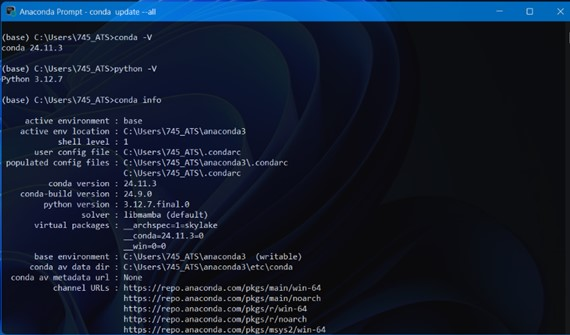
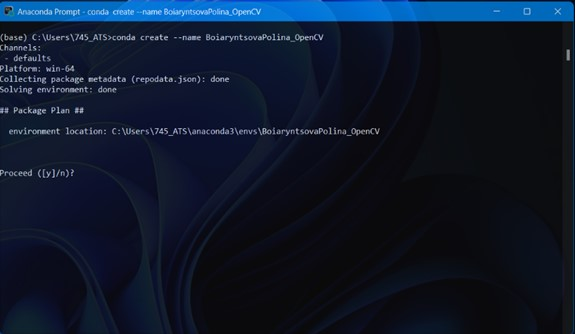

!conda --version
!python --versionЛабораторна робота №2
Тема: Налагоджування та робота в середовищі Anaconda+Quarto
Виконала: Бояринцова Поліна
Група: КН-24-1
Дата: 10.03.2025
1. Завантаження та встановлення Anaconda
1.1 Завантаження
Перейдіть на сайт Anaconda та завантажте дистрибутив для вашої операційної системи.
1.2 Встановлення
- Запустіть інсталятор.
- Оберіть “Install for: Just Me (Recommended)”.
- Вкажіть шлях (
C:\Users\ВашКористувач\Anaconda3).
- Додайте Anaconda до змінних середовища (PATH).
- Дочекайтеся завершення установки.
Перевіримо встановлення:

2. Створення віртуального середовища
Після встановлення Anaconda створимо віртуальне середовище StudentLastName_OpenCV.
!conda env list
# conda environments:
#
base C:\Users\745_ATS\anaconda3
BoiaryntsovaPolina_OpenCV * C:\Users\745_ATS\anaconda3\envs\BoiaryntsovaPolina_OpenCV

3. Встановлення необхідних бібліотек
Встановимо OpenCV, NumPy та Matplotlib у створене середовище.
!conda list# packages in environment at C:\Users\745_ATS\anaconda3\envs\BoiaryntsovaPolina_OpenCV:
#
# Name Version Build Channel
anyio 4.6.2 py310haa95532_0
argon2-cffi 21.3.0 pyhd3eb1b0_0
argon2-cffi-bindings 21.2.0 py310h827c3e9_1
asttokens 2.0.5 pyhd3eb1b0_0
async-lru 2.0.4 py310haa95532_0
attrs 24.3.0 py310haa95532_0
babel 2.16.0 py310haa95532_0
beautifulsoup4 4.12.3 py310haa95532_0
blas 1.0 mkl
bleach 6.2.0 py310haa95532_0
brotli-python 1.0.9 py310h5da7b33_9
bzip2 1.0.8 h2bbff1b_6
ca-certificates 2025.2.25 haa95532_0
cairo 1.16.0 hc68a040_5
certifi 2025.1.31 py310haa95532_0
cffi 1.17.1 py310h827c3e9_1
charset-normalizer 3.3.2 pyhd3eb1b0_0
colorama 0.4.6 py310haa95532_0
comm 0.2.1 py310haa95532_0
contourpy 1.3.1 py310h214f63a_0
cycler 0.11.0 pyhd3eb1b0_0
debugpy 1.8.11 py310h5da7b33_0
decorator 5.1.1 pyhd3eb1b0_0
defusedxml 0.7.1 pyhd3eb1b0_0
eigen 3.4.0 h59b6b97_0
exceptiongroup 1.2.0 py310haa95532_0
executing 0.8.3 pyhd3eb1b0_0
expat 2.6.4 h8ddb27b_0
fontconfig 2.14.1 hb33846d_3
fonttools 4.55.3 py310h827c3e9_0
freetype 2.12.1 ha860e81_0
glib 2.78.4 hd77b12b_0
glib-tools 2.78.4 hd77b12b_0
graphite2 1.3.14 hd77b12b_1
gst-plugins-base 1.22.3 hfc3ed34_1
gstreamer 1.22.3 h1779075_1
h11 0.14.0 py310haa95532_0
harfbuzz 10.2.0 hf458a27_0
hdf5 1.14.5 ha36df97_2
httpcore 1.0.2 py310haa95532_0
httpx 0.27.0 py310haa95532_0
icc_rt 2022.1.0 h6049295_2
icu 73.1 h6c2663c_0
idna 3.7 py310haa95532_0
intel-openmp 2023.1.0 h59b6b97_46320
ipykernel 6.29.5 py310haa95532_1
ipython 8.30.0 py310haa95532_0
jedi 0.19.2 py310haa95532_0
jinja2 3.1.6 py310haa95532_0
jpeg 9e h827c3e9_3
json5 0.9.25 py310haa95532_0
jsonschema 4.23.0 py310haa95532_0
jsonschema-specifications 2023.7.1 py310haa95532_0
jupyter-lsp 2.2.0 py310haa95532_0
jupyter_client 8.6.3 py310haa95532_0
jupyter_core 5.7.2 py310haa95532_0
jupyter_events 0.12.0 py310haa95532_0
jupyter_server 2.15.0 py310haa95532_0
jupyter_server_terminals 0.4.4 py310haa95532_1
jupyterlab 4.3.4 py310haa95532_0
jupyterlab_pygments 0.3.0 py310haa95532_0
jupyterlab_server 2.27.3 py310haa95532_0
kiwisolver 1.4.8 py310h5da7b33_0
krb5 1.20.1 h5b6d351_0
lcms2 2.16 hb4a4139_0
lerc 4.0.0 h5da7b33_0
libabseil 20240116.2 cxx17_h5da7b33_0
libclang 14.0.6 default_hb5a9fac_2
libclang13 14.0.6 default_h8e68704_2
libdeflate 1.22 h5bf469e_0
libffi 3.4.4 hd77b12b_1
libglib 2.78.4 ha17d25a_0
libiconv 1.16 h2bbff1b_3
libogg 1.3.5 h2bbff1b_1
libpng 1.6.39 h8cc25b3_0
libpq 17.4 h70ee33d_0
libprotobuf 4.25.3 hf2fb9eb_0
libsodium 1.0.18 h62dcd97_0
libtiff 4.5.1 h44ae7cf_1
libvorbis 1.3.7 he774522_0
libwebp-base 1.3.2 h3d04722_1
libxml2 2.13.5 h24da03e_0
lz4-c 1.9.4 h2bbff1b_1
markupsafe 3.0.2 py310h827c3e9_0
matplotlib 3.10.0 py310haa95532_0
matplotlib-base 3.10.0 py310he19b0ae_0
matplotlib-inline 0.1.6 py310haa95532_0
mistune 3.1.2 py310haa95532_0
mkl 2023.1.0 h6b88ed4_46358
mkl-service 2.4.0 py310h827c3e9_2
mkl_fft 1.3.11 py310h827c3e9_0
mkl_random 1.2.8 py310hc64d2fc_0
nbclient 0.10.2 py310haa95532_0
nbconvert-core 7.16.6 py310haa95532_0
nbformat 5.10.4 py310haa95532_0
nest-asyncio 1.6.0 py310haa95532_0
notebook-shim 0.2.3 py310haa95532_0
numpy 1.26.4 py310h055cbcc_0
numpy-base 1.26.4 py310h65a83cf_0
opencv 4.10.0 py310h4e21365_2
openjpeg 2.5.2 hae555c5_0
openssl 3.0.16 h3f729d1_0
overrides 7.4.0 py310haa95532_0
packaging 24.2 py310haa95532_0
pandocfilters 1.5.0 pyhd3eb1b0_0
parso 0.8.4 py310haa95532_0
pcre2 10.42 h0ff8eda_1
pillow 11.1.0 py310h096bfcc_0
pip 25.0 py310haa95532_0
pixman 0.40.0 h2bbff1b_1
platformdirs 3.10.0 py310haa95532_0
ply 3.11 py310haa95532_0
prometheus_client 0.21.0 py310haa95532_0
prompt-toolkit 3.0.43 py310haa95532_0
prompt_toolkit 3.0.43 hd3eb1b0_0
psutil 5.9.0 py310h827c3e9_1
pure_eval 0.2.2 pyhd3eb1b0_0
pycparser 2.21 pyhd3eb1b0_0
pygments 2.15.1 py310haa95532_1
pyparsing 3.2.0 py310haa95532_0
pyqt 5.15.10 py310h5da7b33_1
pyqt5-sip 12.13.0 py310h827c3e9_1
pysocks 1.7.1 py310haa95532_0
python 3.10.16 h4607a30_1
python-dateutil 2.9.0post0 py310haa95532_2
python-fastjsonschema 2.20.0 py310haa95532_0
python-json-logger 3.2.1 py310haa95532_0
pywin32 308 py310h5da7b33_0
pywinpty 2.0.14 py310h72d21ff_0
pyyaml 6.0.2 py310h827c3e9_0
pyzmq 26.2.0 py310h5da7b33_0
qt-main 5.15.2 h19c9488_12
referencing 0.30.2 py310haa95532_0
requests 2.32.3 py310haa95532_1
rfc3339-validator 0.1.4 py310haa95532_0
rfc3986-validator 0.1.1 py310haa95532_0
rpds-py 0.22.3 py310h636fa0f_0
send2trash 1.8.2 py310haa95532_1
setuptools 75.8.0 py310haa95532_0
sip 6.7.12 py310h5da7b33_1
six 1.16.0 pyhd3eb1b0_1
sniffio 1.3.0 py310haa95532_0
soupsieve 2.5 py310haa95532_0
sqlite 3.45.3 h2bbff1b_0
stack_data 0.2.0 pyhd3eb1b0_0
tbb 2021.8.0 h59b6b97_0
terminado 0.17.1 py310haa95532_0
tinycss2 1.4.0 py310haa95532_0
tk 8.6.14 h0416ee5_0
tomli 2.0.1 py310haa95532_0
tornado 6.4.2 py310h827c3e9_0
traitlets 5.14.3 py310haa95532_0
typing-extensions 4.12.2 py310haa95532_0
typing_extensions 4.12.2 py310haa95532_0
tzdata 2025a h04d1e81_0
unicodedata2 15.1.0 py310h827c3e9_1
urllib3 2.3.0 py310haa95532_0
vc 14.42 haa95532_4
vs2015_runtime 14.42.34433 he0abc0d_4
wcwidth 0.2.5 pyhd3eb1b0_0
webencodings 0.5.1 py310haa95532_1
websocket-client 1.8.0 py310haa95532_0
wheel 0.45.1 py310haa95532_0
win_inet_pton 1.1.0 py310haa95532_0
winpty 0.4.3 4
xz 5.6.4 h4754444_1
yaml 0.2.5 he774522_0
zeromq 4.3.5 hd77b12b_0
zlib 1.2.13 h8cc25b3_1
zstd 1.5.6 h8880b57_0 Контрольні запитання та відповіді
1. Що таке pip і conda та чим вони відрізняються між собою?
pip – це стандартний менеджер пакетів Python, який використовується для встановлення та управління бібліотеками з PyPI (Python Package Index).
conda – це менеджер пакетів та віртуальних середовищ, який входить до складу Anaconda. Він дозволяє встановлювати пакети як для Python, так і для інших мов програмування (наприклад, R).
Основні відмінності:
- pip працює лише з пакетами Python, conda підтримує інші типи пакетів.
- conda керує залежностями більш ефективно, оскільки може встановлювати бібліотеки у форматах, що не потребують компіляції.
- conda має вбудовані механізми для створення та управління віртуальними середовищами.
2. Як виконати налаштування середовища за допомогою Virtualenv?
Virtualenv – це вбудований інструмент Python для створення ізольованих середовищ.
Покрокова інструкція:
- Встановити Virtualenv:
pip install virtualenv - Створити нове середовище:
virtualenv myenv - Активувати середовище:
myenv\Scripts\activate - Встановити необхідні пакети (наприклад, OpenCV):
pip install opencv-python - Деактивувати середовище:
deactivate
3. Сфотографувати себе на телефон та імпортувати своє зображення у форматі .png на початок робочого зошита.
Кроки:
- Перенести зображення у директорію з файлом .ipynb (наприклад, у папку images).
- Додати зображення у Jupyter Notebook за допомогою Markdown:

4: Bubble Sort (Метод бульбашки)
def bubble_sort(arr):
n = len(arr)
for i in range(n):
for j in range(0, n-i-1):
if arr[j] > arr[j+1]:
arr[j], arr[j+1] = arr[j+1], arr[j]
# Приклад
arr = [64, 34, 25, 12, 22, 11, 90]
bubble_sort(arr)
print("Відсортований масив:", arr)Відсортований масив: [11, 12, 22, 25, 34, 64, 90]5. Як виконати компіляцію вхідного документа Jupyter Notebook з його середовища, не використовуючи інтерфейс командного рядка?
У Jupyter Notebook можна експортувати .ipynb у .html, .pdf або .md без використання командного рядка:
- Відкрити Jupyter Notebook.
- У верхньому меню натиснути File → Download as.
- Обрати потрібний формат:
- HTML (.html)
- PDF via LaTeX (.pdf)
- Markdown (.md)
6. Як виконати компіляцію Jupyter Notebook у HTML?
Для конвертації Jupyter Notebook у HTML можна використати:
- Через командний рядок:
jupyter nbconvert lab_2_StudentLastName.ipynb --to html - За допомогою Quarto
quarto preview lab_2_StudentLastName.ipynb